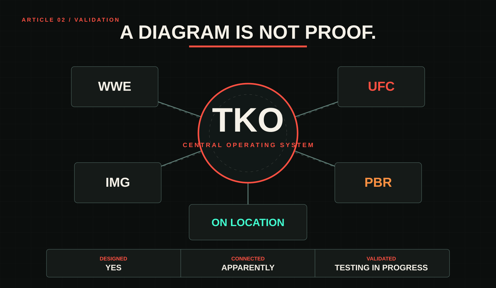
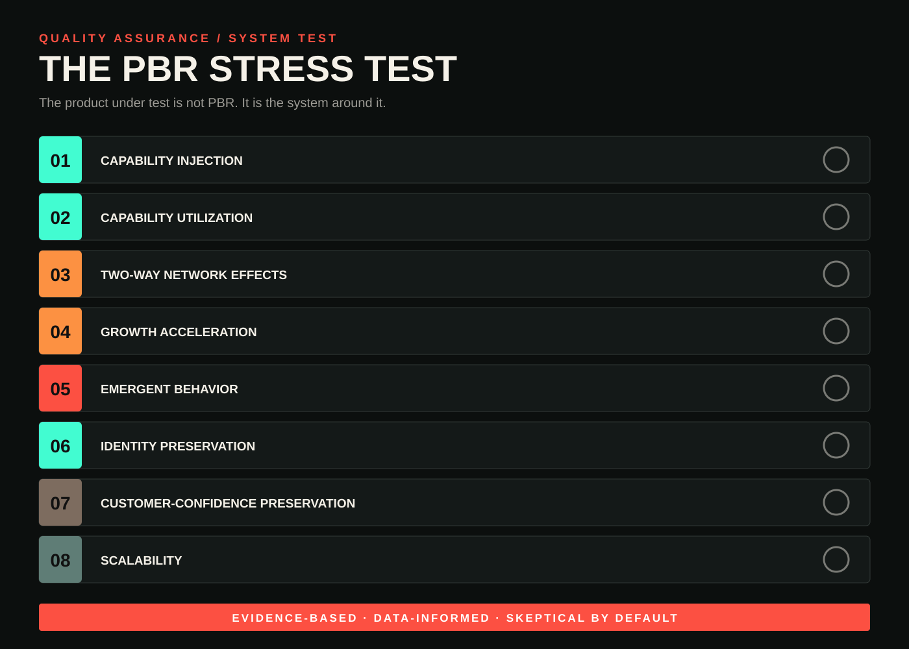
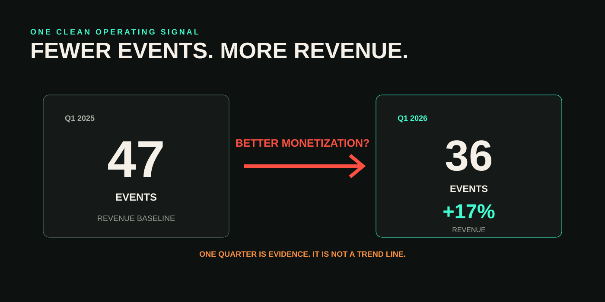
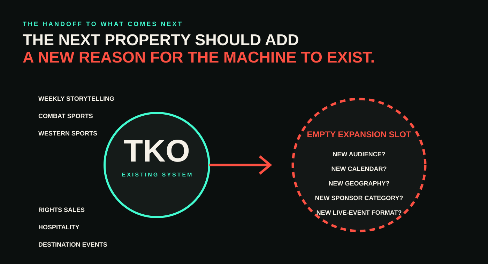

Ten years before PBR became part of TKO, Sean Gleason used a phrase that feels familiar now.
Shortly after WME-IMG acquired Professional Bull Riders in 2015, Gleason described the goal as plugging PBR into the broader WME-IMG machine.
That history complicates this article before it begins.
PBR did not suddenly discover IMG when it entered TKO. It did not gain access to On Location for the first time. It did not wake up one morning surrounded by capabilities it had never seen before.
PBR, IMG, and On Location already lived within the broader Endeavor ecosystem. When TKO formally acquired them, the transaction brought businesses under a more focused sports and entertainment company—but not complete strangers meeting for the first time.
That matters because I cannot take everything PBR accomplished after the transaction and assign it to TKO. Some relationships already existed. Some momentum was already underway. Some of what TKO inherited may have happened anyway.
So the test needs to be more precise
The question is not whether TKO handed PBR a box of tools it had never touched.
The question is whether bringing PBR, IMG, On Location, WWE, and UFC together inside a more focused company has made those tools easier to coordinate, easier to scale, and more valuable when used together.
In the first article, I argued that TKO makes more sense as a platform than as a collection of logos.
WWE creates weekly storytelling. UFC creates legitimate competition. PBR adds another live sports property with its own athletes, culture, calendar, sponsors, and audience. IMG sells rights and commercial partnerships. On Location builds premium experiences around events people already want to attend.
Put those pieces on a diagram, draw enough arrows between them, and the argument starts to look obvious.
But diagrams are generous.
They can make ownership look like integration. They can make proximity look like synergy. They can make a collection of compatible businesses look like a machine before any force has actually moved through it.
I am a Quality Analyst by trade. My job is not to assume a system works because it was designed to work. A feature is not functioning because somebody described the intended behavior. A business is not integrated because management placed it beneath the same corporate heading.
Potential is the hypothesis. Observed behavior is the test.

Why PBR?
WWE and UFC are useful examples of coordination. They are not the hardest test.
The two businesses share too much obvious DNA. Both are built around physical conflict. Both transform athletes or performers into recognizable personalities. Both sell live events, media rights, sponsorships, merchandise, and premium experiences. Both depend on creating moments large enough that people will pay to see what happens next.
PBR shares some of those traits. It is dangerous. It is personality-driven. It creates live spectacle.
But culturally, PBR occupies a different lane. Its western identity is not simply another coat of paint on a combat-sports product. It brings a different audience, different sponsors, different traditions, different regional relationships, and a different rhythm to TKO’s calendar.
That difference is what makes PBR valuable as a test.
WWE helping UFC would show that TKO can coordinate two adjacent businesses. PBR benefiting from the same infrastructure would show that the system is modular.
If the machine only works when every gear already looks the same, it is not much of a machine.
What would have to be true?
A functioning system should do more than move expenses onto the same spreadsheet. It should produce observable behavior.
PBR should gain access to useful capabilities. Those capabilities should actually be used. Value should move in both directions—not merely from TKO into PBR. The business should become easier to monetize or grow. Its identity should remain intact. The system should create opportunities none of the individual properties could produce as effectively alone.
And whatever value is created should not come at the expense of the audience relationship that made the property valuable in the first place.
That is the stress test. Not whether every metric immediately rises. Not whether TKO can issue a convincing press release. Whether the system begins behaving like a system.

Test One: Are the capabilities actually being used?
TKO’s pitch is relatively straightforward.
IMG brings expertise in rights sales, distribution, partnerships, and event management. On Location provides premium hospitality and experience packaging. WWE, UFC, and PBR provide owned properties on which those capabilities can be applied.
The proposed value does not come from merely possessing each part. It comes from moving work between them.
The cleanest rights example is PBR’s long-term Paramount agreement. IMG advised PBR in those negotiations. That sentence matters more than the corporate organization chart. IMG does not merely appear beside PBR in a presentation. Its rights expertise was used on PBR’s behalf.
The same pattern is visible in sponsorship and hospitality.
The first TKO Takeover in Kansas City placed PBR, UFC, and Monday Night Raw in the same arena over a five-day period. TKO sold an all-event ticket package, expanded a sponsor relationship across the weekend, and used On Location to offer premium packages around the three properties.
Nothing about the individual products needed to become the same.
PBR remained PBR. UFC remained UFC. Raw remained Raw.
The integration happened around them: scheduling, ticketing, sponsorship, hospitality, venue relationships, tourism, and distribution.
That is what the machine is supposed to do. The infrastructure becomes consistent. The products remain distinct.
The capabilities are not sitting dormant. They are reaching PBR. The important qualifier is that TKO appears to be improving the coordination of tools that did not all begin with the formal transaction.

Test Two: Does value move in both directions?
A functioning ecosystem cannot be a one-way support program.
PBR should receive value from the rest of TKO. It should also make the rest of the system more valuable.
The first half is relatively easy to see. PBR benefits from rights expertise, broader sponsorship relationships, premium hospitality, venue coordination, and TKO’s growing relationships with cities and sports commissions.
The other half is less direct. It may be more important.
PBR gives TKO additional live-event inventory. It gives IMG another owned property to sell. It gives On Location another category of experience to package. It gives TKO access to sponsor categories and customers that may see an immediate connection to western sports but would never begin a conversation with WWE or UFC alone.
PBR’s difference expands the machine. It does not weaken it.
A multi-property automotive partnership illustrates the logic. A truck brand has an obvious cultural connection to PBR. TKO can extend that relationship across WWE and UFC, giving the sponsor broader scale than a PBR-only agreement could provide.
PBR is not merely receiving a sponsor handed down from the larger brands. Its presence helps make the package make sense.
The value can move both ways. That is the part traditional synergy language often misses.
PBR is not useful because it can be absorbed into the existing audience. It is useful because it adds another audience. Another commercial vocabulary. Another reason for a sponsor to enter the ecosystem.
The network effect is visible. The exact financial attribution is not. We can see the connection without cleanly isolating the size of the transfer.

Test Three: Can the machine create something new?
This is where the Kansas City weekend becomes more than an example of coordination.
The interesting part is not that TKO scheduled three events. It is that combining those events created a product that did not meaningfully exist inside any one of them.
A city could already host Raw. It could already host UFC. It could already host PBR.
The Takeover allowed TKO to sell something broader: multiple broadcasts, multiple ticketed events, hotel nights, restaurant traffic, sponsor activation, premium hospitality, national exposure, and a destination package.
TKO is increasingly able to approach cities and sports commissions as a coordinated event pipeline rather than a collection of isolated bookings.
Kansas City may have been the prototype. Broader multi-event market agreements make the platform itself look more like a product.
That is emergent behavior. A system creates emergent behavior when the combination produces an outcome none of its parts can create as effectively alone.
PBR could not sell a WWE broadcast. WWE could not offer bull riding. UFC could not fill every date in a multi-event regional agreement by itself.
But TKO can approach a city and say:
We do not only have one event for you. We have a calendar.
That changes the customer. TKO is no longer selling only to ticket buyers, broadcasters, and sponsors. It is selling to cities, tourism boards, sports commissions, venue operators, and economic-development groups.
A holding company owns multiple products. A machine can combine them into a product none of them could have sold alone.
The new product exists. The long-term value created for host markets still needs stronger independent post-event measurement.

Test Four: Is PBR itself getting healthier?
This is where the test becomes less clean.
PBR is not reported as a fully separate segment, which makes clean attribution difficult. We can see directional commentary and operating signals. We cannot inspect every component of the P&L.
The clearest recent signal arrived when TKO reported that PBR revenue increased by 17 percent compared with the same quarter a year earlier, driven by higher media-rights fees and partnership revenue.
The event count makes that number more interesting. PBR ran 36 events during the quarter, down from 47 a year earlier.
Fewer events. More revenue.
That suggests improved monetization rather than simple growth through volume. It is the kind of result the machine should create: better rights economics, stronger partnerships, and more value produced from the calendar rather than merely adding dates to it.
But it is still one quarter. A contractual rights step-up is meaningful without becoming a perfectly smooth organic trend. The reporting structure remains a problem too.
We have enough telemetry to see that something is happening. Not enough to inspect every part of it.
The early operational signals are good. Sustained performance testing is still underway.

Test Five: Has the machine improved the product—or only the packaging?
A stronger media-rights deal is good. New sponsors are good. A city package is good.
But PBR is not ultimately sustained by corporate architecture. It is sustained by whether people care about the competition. Whether riders become recognizable. Whether teams develop identities. Whether rivalries matter. Whether the audience becomes more attached to the product rather than merely easier to monetize.
That makes star creation one of the more interesting open tests.
WWE’s native strength is building weekly stories around personalities. UFC’s strength is turning legitimate competition into recognizable fighters and meaningful stakes.
PBR has its own version of that capability, but it cannot simply copy either model. The sport needs to create stars in its own language: courage, consistency, regional identity, the relationship between rider and bull, and the difference between surviving eight seconds and controlling them.
The Teams format creates another structure around which attachment can form, but it began before PBR formally entered TKO. TKO inherited that experiment rather than inventing it.
The correct question is not whether TKO has created a new PBR star. It is whether the machine has made PBR better at distributing, amplifying, and monetizing the stars and stories its sport already knows how to create.
The public evidence is not yet strong enough to answer that cleanly. Distribution has expanded. Cross-property sponsorship can increase visibility. Takeover weekends can introduce PBR to people attending for UFC or WWE. But the commercial layer is further along than the audience layer.
The packaging has improved. Whether the product is creating deeper attachment remains less clear.

Test Six: Has PBR remained PBR?
This may be the cleanest result.
TKO has not visibly attempted to turn PBR into WWE. It has not forced the product to adopt UFC’s presentation. PBR has retained its western identity, competition formats, tours, and distinct place within the portfolio.
That is a real success because integration does not require homogenization.
The rights team can be shared. The sponsor relationship can be shared. The hospitality system can be shared. The venue agreement can be shared.
The identity should not be.
PBR’s difference is not a defect the machine needs to correct. It is one of the assets the machine is supposed to protect. A healthy system creates consistency in the infrastructure without forcing sameness in the product.
PBR appears to be gaining coordination without losing its visible identity.
But visible identity is not the entire test
A company can keep the cowboy hats, the dirt, the music, and every piece of visual language associated with the product—and still change who the product increasingly feels designed for.
That is the concern underneath any premiumization strategy.
On Location is part of the machine because premium experiences are valuable. Cities are part of the machine because destination events are valuable. Corporate sponsors are part of the machine because bundled access to multiple audiences is valuable.
None of that is inherently bad. The risk begins when the premium layer stops being an addition and becomes the center of the product—when the culture remains visible, but the people who created its value begin to feel like scenery sold to somebody else.
Can TKO make blue-collar entertainment more valuable without gentrifying it?
I do not mean gentrified as a synonym for successful, polished, or expensive. The question is whether more of the product is gradually redesigned around higher-income destination customers, corporate guests, tourism partners, and premium buyers at the expense of the people who formed the original audience.
That is where customer confidence becomes operational.
A machine that extracts more value while weakening that relationship is not operating cleanly. It is converting a renewable asset into short-term yield.
I cannot say that has happened with PBR. That makes it a risk condition, not a confirmed defect.
The visible identity remains intact. The relationship between premiumization, accessibility, and customer confidence requires continued testing.

Test Seven: Is the system repeatable?
Kansas City could have been an isolated experiment. The broader evidence suggests TKO is turning parts of the concept into a playbook.
Multi-event city agreements, portfolio sponsorships, IMG advising on rights, and On Location building hospitality around properties that do not need to resemble one another all point to a reusable architecture.
The executions are different. The architecture is not.
Rights. Partnerships. Events. Cities. Venues. Hospitality. Distribution.
Those capabilities are not specific to bull riding. That makes the system reusable.
It does not make every future acquisition wise.
Another property may not add a meaningful audience. Its calendar may overlap rather than complement. Its rights may be too expensive. Its culture may reject TKO’s commercial model. It may generate more inventory without adding a capability the company needs.
Repeatable infrastructure reduces friction. It does not eliminate judgment.
The machine appears capable of supporting another property. That does not tell us what should be placed inside it.
The success of PBR should not encourage TKO to buy more businesses that look like PBR, UFC, or WWE.
The machine becomes more useful when a new property adds something the existing system does not already possess: another audience, season, geography, commercial category, form of live experience, or capability.
Difference is not the friction. Difference is the point.
The responsibility of the machine is to make that difference more capable without sanding it away.

What the test cannot tell us
The machine appears to be operating. That does not mean every output is measurable.
PBR remains folded into a broader reporting bucket, making standalone profitability difficult to assess. Sponsorship agreements rarely disclose enough detail to attribute value across individual properties. Economic-impact figures may be estimates rather than independently published final reports. Social and star-recognition data lack a reliable public baseline. And the counterfactual remains impossible.
There is no version of PBR continuing along the same timeline outside TKO that we can use as a control group.
Those limitations do not make the test useless. They define how strong the conclusions are allowed to be.
We can see shared capabilities being deployed. We can see cross-property sponsorships and city agreements. We can see PBR revenue increase alongside fewer events in a quarter. We can see the beginning of an event-development model that sells a portfolio rather than an isolated show.
We cannot yet prove every connection is materially profitable. We cannot prove the audience is deepening at the same pace as the commercial infrastructure. We cannot prove premiumization will remain healthy indefinitely.
The evidence supports the existence of the machine. It does not grant the machine immunity from future defects.
The verdict
I do not think TKO’s machine is imaginary.
The strongest evidence exists in the layers the company can directly control: media rights, sponsorship, hospitality, event packaging, venue relationships, and city partnerships.
Those connections are real. They are being used. And in the case of the Takeover model, they are beginning to produce something new.
TKO can sell more than an event. It can sell a city a calendar. That may be the clearest evidence yet that this is becoming something more than common ownership.
The machine becomes less proven as we move closer to the audience: star creation, social attachment, cultural relevance, affordability, and customer confidence.
Those outcomes take longer. They are harder to manufacture through corporate coordination. And they are much easier to damage than a spreadsheet will show.
TKO has demonstrated that it can improve how PBR is packaged, sold, distributed, and connected to other businesses. It has begun demonstrating that the combination can create products none of the individual pieces could sell as effectively alone.
It has not yet demonstrated that every commercial improvement will compound into sustained product-level growth—or that the pursuit of premium value will never come at the expense of the audiences beneath it.
That does not break the thesis. It tells us where the machine is strongest and where it still needs monitoring.
PBR is not proof that TKO can acquire anything and make it work. It is evidence that the company can take a property culturally distinct from WWE and UFC, connect it to shared infrastructure, and create observable value without forcing it to become the same product.
That changes the question around whatever comes next.
The next property does not need to resemble WWE. It does not need to resemble UFC. It does not need to resemble PBR.
It should add something the machine cannot already do.
But it also has to survive the machine.
TKO needs to make it more capable without making it less itself.
Now we have a test. The next question is what should be plugged into it.